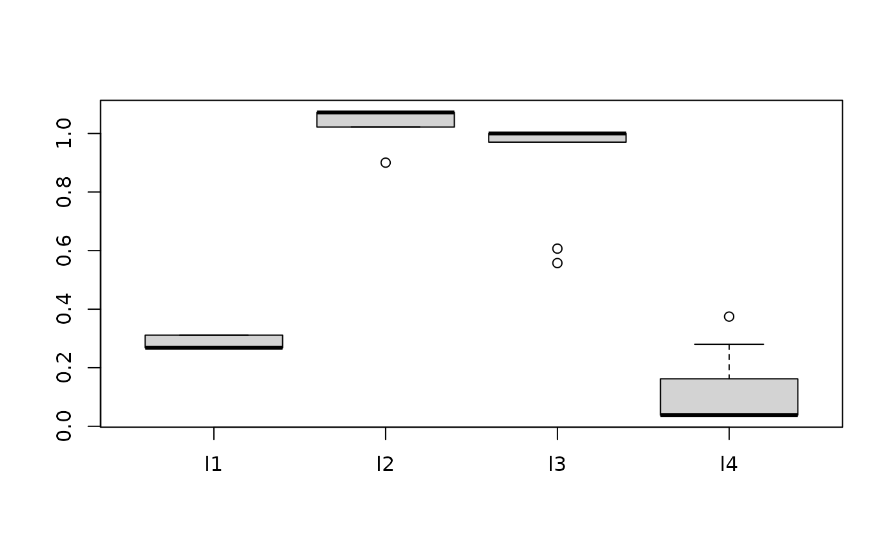

R/depr_bark.r
bark-deprecated.RdBARK is a Bayesian sum-of-kernels model.
For numeric response \(y\), we have
\(y = f(x) + \epsilon\),
where \(\epsilon \sim N(0,\sigma^2)\).
For a binary response \(y\), \(P(Y=1 | x) = F(f(x))\),
where \(F\)
denotes the standard normal cdf (probit link).
In both cases, \(f\) is the sum of many Gaussian kernel functions.
The goal is to have very flexible inference for the unknown
function \(f\).
BARK uses an approximation to a Cauchy process as the prior distribution
for the unknown function \(f\).
Feature selection can be achieved through the inference on the scale parameters in the Gaussian kernels. BARK accepts four different types of prior distributions, e, d, enabling either soft shrinkage or se, sd, enabling hard shrinkage for the scale parameters.
Explanatory variables for training (in sample) data.
Must be a matrix of doubles,
with (as usual) rows corresponding to observations
and columns to variables.
Dependent variable for training (in sample) data.
If y is numeric a continuous response model is fit (normal errors).
If y is a logical (or just has values 0 and 1),
then a binary response model with a probit link is fit.
Explanatory variables for test (out of sample) data.
Should have same structure as x.train.
BARK type, e, d, se, or sd, default
choice is se.
e: BARK with equal weights.
d: BARK with different weights.
se: BARK with selection and equal weights.
sd: BARK with selection and different weights.
TRUE/FALSE logical variable, indicating a classification or regression problem.
Every keepevery draw is kept to be returned to the user
Number of MCMC iterations (nburn*keepevery) to be treated as burn in.
Number of MCMC iterations kept for the posterior inference.
nkeep*keepevery iterations after the burn in.
As the MCMC runs, a message is printed every printevery draws.
Logical, whether to keep results for training samples.
A list of fixed hyperparameters, using the default values if not
specified.
alpha = 1: stable index, must be 1 currently.
eps = 0.5: approximation parameter.
gam = 5: intensity parameter.
la = 1: first argument of the gamma prior on kernel scales.
lb = 2: second argument of the gamma prior on kernel scales.
pbetaa = 1: first argument of the beta prior on plambda.
pbetab = 1: second argument of the beta prior on plambda.
n: number of training samples, automatically generates.
p: number of explanatory variables, automatically generates.
meanJ: the expected number of kernels, automatically generates.
A list of tuning parameters, not expected to change.
lstep: the stepsize of the lognormal random walk on lambda.
frequL: the frequency to update L.
dpow: the power on the death step.
upow: the power on the update step.
varphistep: the stepsize of the lognormal random walk on varphi.
phistep: the stepsize of the lognormal random walk on phi.
A list of the starting values for the parameter theta, use defaults if nothing is given.
bark returns a list, including:
Fixed hyperparameters
Tuning parameters used
The last set of parameters from the posterior draw
A matrix with nrow(x.train)\(+1\) rows and (nkeep) columns, recording the number of kernels at each training sample
A matrix with nrow(x.train) \(+1\) rows and (nkeep) columns, recording the precision in the normal gamma prior distribution for the regression coefficients
A matrix with nrow(x.train)\(+1\) rows and (nkeep) columns, recording the regression coefficients
A matrix with ncol(x.train) rows and (nkeep) columns, recording the kernel scale parameters
The vector of length nkeep, recording the precision in regression Gaussian noise (1 for the classification case)
A matrix with nrow(x.train) rows and (nkeep) columns.
Each column corresponds to a draw \(f^*\) from
the posterior of \(f\)
and each row corresponds to a row of x.train.
The \((i,j)\) value is \(f^*(x)\) for
the \(j^{th}\) kept draw of \(f\)
and the \(i^{th}\) row of x.train.
For classification problems, this is the value
of the expectation for the underlying normal
random variable.
Burn-in is dropped
Same as yhat.train but now the x's are the rows of the test data
train data fits = row mean of yhat.train
test data fits = row mean of yhat.test
BARK is implemented using a Bayesian MCMC method. At each MCMC interaction, we produce a draw from the joint posterior distribution, i.e. a full configuration of regression coefficients, kernel locations and kernel parameters etc.
Thus, unlike a lot of other modelling methods in R, we do not produce a single model object from which fits and summaries may be extracted. The output consists of values \(f^*(x)\) (and \(\sigma^*\) in the numeric case) where * denotes a particular draw. The \(x\) is either a row from the training data (x.train)
Ouyang, Zhi (2008) Bayesian Additive Regression Kernels. Duke University. PhD dissertation, page 58.
Other bark deprecated functions:
bark-package-deprecated,
sim.Circle-deprecated,
sim.Friedman1-deprecated,
sim.Friedman2-deprecated,
sim.Friedman3-deprecated
##Simulate regression example
# Friedman 2 data set, 200 noisy training, 1000 noise free testing
# Out of sample MSE in SVM (default RBF): 6500 (sd. 1600)
# Out of sample MSE in BART (default): 5300 (sd. 1000)
traindata <- sim_Friedman2(200, sd=125)
testdata <- sim_Friedman2(1000, sd=0)
fit.bark.d <- bark_mat(traindata$x, traindata$y, testdata$x,
nburn=10, nkeep=100, keepevery=10,
classification=FALSE, type="d")
#> [1] "Starting BARK-d for this regression problem"
#> [1] "posterior mcmc iteration 1000, J=5, max(nj)=1"
boxplot(data.frame(fit.bark.d$theta.lambda))

mean((fit.bark.d$yhat.test.mean-testdata$y)^2)
#> [1] 3717.933
if (FALSE) {
##Simulate classification example
# Circle 5 with 2 signals and three noisy dimensions
# Out of sample erorr rate in SVM (default RBF): 0.110 (sd. 0.02)
# Out of sample error rate in BART (default): 0.065 (sd. 0.02)
traindata <- sim_Circle(200, dim=5)
testdata <- sim_Circle(1000, dim=5)
fit.bark.se <- bark_mat(traindata$x, traindata$y, testdata$x, classification=TRUE, type="se")
boxplot(data.frame(fit.bark.se$theta.lambda))
mean((fit.bark.se$yhat.test.mean>0)!=testdata$y)
}